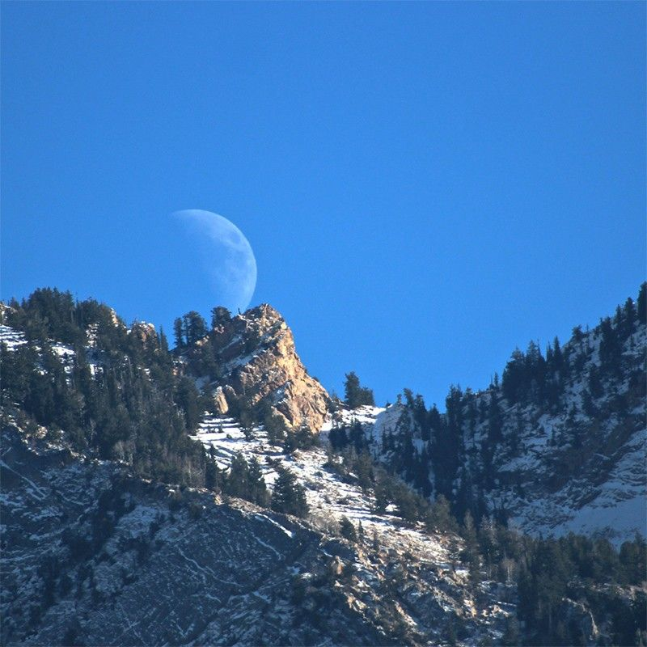
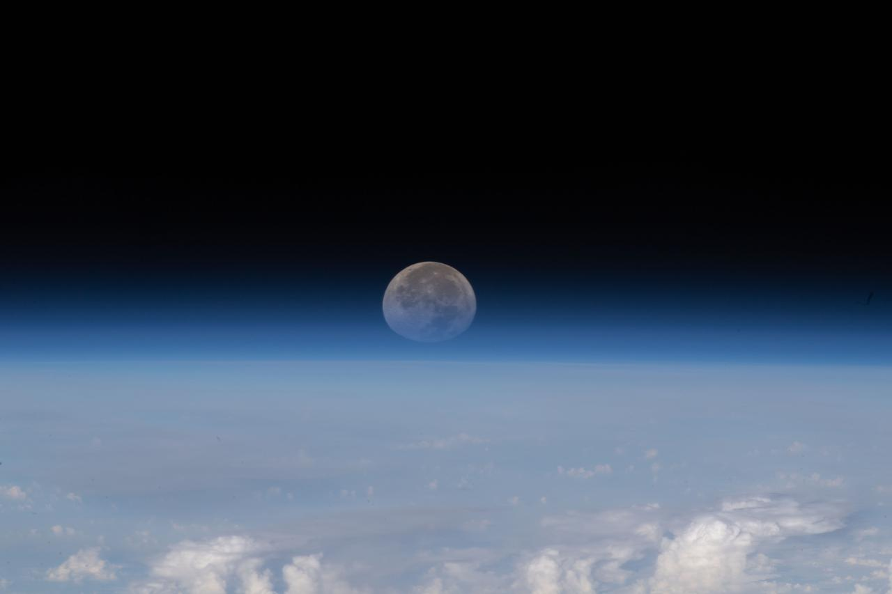
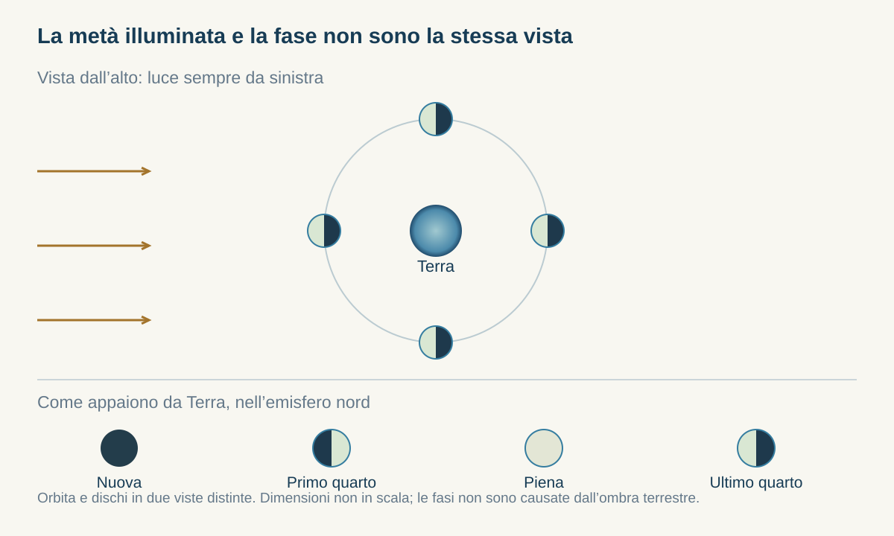

La Luna non appartiene soltanto alla notte
Un pomeriggio limpido può offrire una sorpresa: sopra un tetto, nel cielo ancora azzurro, compare una Luna pallida. Non è fuori posto. La sua visibilità dipende dalla posizione rispetto al Sole, dall’altezza sull’orizzonte e dal contrasto con il fondo del cielo. L’associazione «Sole di giorno, Luna di notte» è una consuetudine narrativa, non una legge astronomica. Imparare le fasi significa acquisire una chiave per prevedere quando cercarla, senza limitarsi a riconoscere otto piccole icone sul calendario.
La luce visibile che ci arriva dalla Luna è soprattutto luce solare riflessa dalla sua superficie. Il Sole illumina, in condizioni ordinarie, circa metà della sfera lunare. Dalla Terra vediamo un emisfero della Luna, e la porzione illuminata contenuta in quell’emisfero cambia durante il movimento orbitale. La Luna resta un corpo intero anche quando il disco visibile sembra una falce: il suo materiale non cresce e non si consuma ogni mese.
Ritrova la fotografia commentata e i suoi riferimenti ↑
Prima di usare un calendario, prova a descrivere il disco: quale parte riceve direttamente il Sole? Quanto è grande la parte visibile? Dove si trova il Sole rispetto alla Luna? Queste domande trasformano una sagoma in una configurazione nello spazio. Le parole «crescente» e «calante» descrivono una variazione nel tempo; da una sola fotografia, senza orientamento e contesto, non sempre si può assegnarle correttamente.
Tre corpi, due direzioni e un punto di vista
Immagina la Terra al centro di uno schema visto da sopra il polo nord. Il Sole è lontano e i suoi raggi possono essere rappresentati quasi paralleli. La Luna si sposta intorno alla Terra. A ogni posizione chiediti separatamente quale emisfero lunare guarda il Sole e quale guarda l’osservatore terrestre. Le due metà coincidono quasi alla Luna piena, sono quasi opposte alla Luna nuova e si sovrappongono per metà del disco visibile ai quarti.
Il confine fra giorno e notte sulla Luna si chiama terminatore. Non è il bordo del corpo e non è, nelle fasi ordinarie, il bordo dell’ombra terrestre. La sua proiezione sul disco può essere quasi una linea retta ai quarti oppure una curva nelle altre fasi. Sulla superficie, vicino a quel confine, il Sole è basso: rilievi e crateri producono ombre lunghe. Questo sarà il motivo per cui la lezione successiva privilegia certe illuminazioni quando si osservano i dettagli.
Un modello bidimensionale cancella l’inclinazione dell’orbita lunare. Per questo bisogna dichiarare che descrive le fasi e non decide se avvenga un’eclisse. Nello spazio reale la Luna può passare sopra o sotto la direzione del Sole pur essendo nuova. Allo stesso modo, alla piena può evitare l’ombra terrestre. L’allineamento angolare che determina la fase e quello più preciso necessario per l’eclisse sono questioni differenti.
Scegli una posizione della Luna e cerca la metà illuminata dal Sole. Poi osserva quanta di quella metà si presenta alla Terra.
Nell’esperimento con la lampada, tieni distinto il punto dal quale guardi dalla posizione della sorgente. La metà della sfera rivolta alla lampada è illuminata; girandole intorno cambia quanta parte di quella metà entra nella tua vista. La faccia rivolta verso la Terra non è perciò sempre la metà illuminata. Neppure «faccia lontana» significa faccia perennemente buia. Per capire una fase individua prima direzione del Sole e linea di vista, poi assegna il nome. L’ombra della Terra entra in un altro fenomeno, l’eclisse, che richiede un allineamento particolare.
Osserva, confronta, riconosci


La deformazione apparente riguarda il percorso della luce, non la forma fisica del satellite.
NASA/JSC · Uso educativo, linee guida NASA.La metà illuminata vista da posizioni diverse
Prima scegli un confronto. Poi osserva che cosa cambia e collega l’effetto alla spiegazione.
Il modello richiede JavaScript; il principio e le immagini restano leggibili.
Modello didattico originale AD ASTRA: semplificazioni dichiarate nella figura. Il movimento, quando disponibile, parte solo su richiesta.
Apri il confronto numerico precedente · facoltativo
Dalla posizione orbitale al disco visto dalla Terra
Prevedi la frazione illuminata a 0°, 90° e 180°. Il modello assume un Sole lontano, un’orbita circolare e un osservatore al centro della Terra: non è un’effemeride. Non include libratione, inclinazione orbitale, rilievi o orientamento rispetto all’orizzonte locale.
Le fasi come tappe di una trasformazione continua
Alla Luna nuova la direzione apparente della Luna è vicina a quella del Sole e la parte rivolta a noi è quasi tutta in notte. Non è un oggetto da cercare con un telescopio vicino al Sole. Nei giorni successivi compare una falce crescente, poi il primo quarto, la gibbosa crescente e la piena. La superficie direttamente illuminata che vediamo aumenta progressivamente: fra una tappa e la successiva non avviene un salto.

Dopo la piena si susseguono gibbosa calante, ultimo quarto e falce calante, fino alla nuova. «Gibbosa» indica un disco illuminato per più di metà, senza essere pieno. Ai quarti vediamo all’incirca metà del disco illuminata: il nome non indica che soltanto un quarto del disco fotografico sia chiaro. Si riferisce alla posizione nel ciclo. È utile distinguere il linguaggio dell’orbita da quello dell’area proiettata.
Un calendario assegna istanti alle principali configurazioni. A occhio la piena può sembrare tale anche un poco prima o dopo: la sensibilità del nostro sguardo non definisce un istante preciso. Anche «sette giorni per fase» è soltanto un’approssimazione. L’orbita non è circolare, il moto non è uniforme e le durate effettive fra quarti consecutivi variano. Per organizzare una serata usa le effemeridi, non la divisione esatta di un mese civile in quattro parti.
Perché metà della sfera illuminata non significa sempre metà del disco chiaro?
La metà illuminata è una regione tridimensionale. Il disco è una proiezione: guardando la sfera da una direzione diversa rispetto al Sole, cambia quanta parte del suo emisfero diurno rientra nel nostro emisfero visibile. È lo stesso motivo per cui una pallina illuminata lateralmente può mostrare una falce senza cambiare forma.
Due mesi diversi: tornare alle stelle o tornare al Sole
Il mese siderale è il tempo medio necessario perché la Luna torni alla stessa direzione rispetto alle stelle: circa 27,32 giorni. Il mese sinodico è il ciclo medio delle fasi, circa 29,53 giorni. La differenza non è un errore dei calendari. Mentre la Luna compie un giro, la Terra e la Luna avanzano insieme nell’orbita intorno al Sole, e la direzione verso il Sole è cambiata.
Dopo il ritorno al riferimento stellare, la Luna deve quindi avanzare ancora per ricostruire la stessa configurazione rispetto al Sole. È un ragionamento simile alla differenza fra giorno siderale e solare incontrata nella lezione 2.1. Il filo comune è la scelta del riferimento: «ha fatto un giro» è una frase incompleta finché non dici rispetto a che cosa.
Approfondimento numerico precedente · facoltativo
La relazione media 1/Psin = 1/Psid − 1/Panno permette di confrontare i ritmi, usando periodi nelle stesse unità. Con Panno di circa 365,26 giorni e Psid di circa 27,32 giorni si ottiene un vicino a 29,53 giorni. Non usare la formula per predire l’istante preciso del prossimo novilunio: riassume moti medi e lascia fuori molte perturbazioni.
Dodici lunazioni durano circa 354 giorni, meno di un anno solare. Un calendario che seguisse solo dodici cicli lunari si sposterebbe attraverso le stagioni. Il nostro calendario civile non è un calendario delle fasi: un mese di trenta o trentuno giorni può ospitare configurazioni diverse da quelle del mese precedente. Questa distinzione spiega perché non basta ricordare il giorno del mese in cui si è vista la piena.
Prevedere quando cercarla, senza inventare orari esatti
La separazione angolare dal Sole dà un primo orientamento. Una falce crescente segue il Sole e si cerca spesso dopo il tramonto; al primo quarto la Luna è adatta alle ore serali. Alla piena è approssimativamente opposta al Sole: sorge intorno al tramonto e attraversa gran parte della notte. All’ultimo quarto è una presenza soprattutto della seconda metà della notte e del mattino.
Queste descrizioni non sono una tabella di orari per qualsiasi città. Declinazione lunare, latitudine, stagione, rilievi dell’orizzonte e rifrazione modificano il sorgere e il tramontare. Anche il ritardo quotidiano non è sempre di cinquanta minuti esatti. La fase fornisce un’indicazione geometrica; la previsione locale richiede un calcolo astronomico. Nelle pagine Effemeridi e Cielo del mese scegli la città e leggi i dati associati.
Per fare una previsione personale, scrivi prima una frase controllabile: «questa Luna crescente sarà visibile nella prima parte della sera, se il cielo e l’orizzonte lo permettono». Dopo l’osservazione confronta il risultato. Se non la trovi, non cambiare subito teoria: controlla nubi, ostacoli, orario e direzione. L’assenza nel tuo campo visivo non dimostra l’assenza sopra l’orizzonte astronomico.
Destra, sinistra e luce cinerea
Nelle immagini convenzionali orientate per l’emisfero boreale, la crescita è spesso rappresentata con la parte chiara a destra. Ma il disco ruota rispetto all’orizzonte mentre lo osserviamo, e l’emisfero australe offre un orientamento diverso. Un telescopio può inoltre ribaltare o invertire l’immagine. Le regole mnemoniche basate sulla forma di una lettera non sostituiscono la geometria.
Una regola più robusta è cercare la direzione del Sole: la parte illuminata della Luna è rivolta verso la sorgente. Questa relazione va interpretata nello spazio, non obbligando una foto a mantenere sempre la stessa inclinazione sulla pagina. Se confronti scatti di orari o strumenti diversi, registra l’orientamento prima di decidere che il cambiamento sia una nuova fase.
Vicino alla falce talvolta si distingue debolmente anche il resto del disco. È la luce cinerea: il Sole illumina la Terra e parte della luce riflessa terrestre illumina la notte lunare, poi torna verso di noi. La porzione debole non riceve direttamente il Sole nello stesso modo della falce. Un’esposizione fotografica lunga può renderla molto evidente e sovraesporre la parte brillante: la foto non equivale sempre al contrasto percepito a occhio.
Una lampada, una sfera e un diario: due verifiche complementari
Per un modello domestico usa una lampada normale, una pallina chiara e una stanza oscurata. La testa rappresenta il punto di vista terrestre e la lampada il Sole. Tieni la sfera abbastanza lontana dal viso e leggermente più in alto, così l’ombra della testa non cade su di essa. Muovi la sfera attorno a te senza cambiare la posizione della lampada. Cerca falce, quarto e disco quasi pieno. Non puntare mai occhi o strumenti verso il Sole per imitare l’esperimento.
Se l’ombra della testa oscura la pallina, stai modellando un’eclisse lunare, non una fase ordinaria. Questo errore è istruttivo: ti mostra perché i due fenomeni richiedono spiegazioni diverse. La lampada è molto più vicina rispetto al Sole reale, quindi i raggi non sono perfettamente paralleli; la sfera domestica serve a capire il rapporto fra illuminazione e vista, non a ricavare misure precise.
Affianca al modello un diario di almeno due settimane. Per ogni osservazione registra data, ora civile, luogo, direzione approssimativa, porzione illuminata e condizioni del cielo. Disegna il disco senza esagerare i particolari. Se fai fotografie, mantieni indicazioni su orientamento e impostazioni. Un giorno nuvoloso è un dato mancante, non una Luna nuova. Ricostruisci poi la successione e confrontala con una fonte di effemeridi.
La faccia nascosta è sempre buia?
No. La rotazione sincrona fa sì che la Luna rivolga alla Terra quasi lo stesso emisfero, ma entrambe le grandi metà hanno giorno e notte. «Nascosta» riguarda il nostro punto di vista; «in notte» riguarda l’illuminazione solare. La libratione permette inoltre di osservare nel tempo un poco più di un emisfero, senza rendere visibile tutto il lato lontano.
Verifica la spiegazione, non soltanto il nome
Per ogni risposta disegna dove immagini Sole, Terra e Luna. Un disegno coerente rende più facile individuare la causa dell’errore.
La lezione sulla superficie lunare userà il terminatore per leggere crateri e rilievi: la fase diventerà una scelta osservativa, oltre che una forma da riconoscere.
Bastano alcuni schizzi, fatti in serate diverse, per costruire il tuo racconto delle fasi. Conserva anche l’ora: aiuta a capire dove ritrovare la Luna.
Fonti e approfondimenti
Testo e schemi originali AD ASTRA. Le fonti indicate sono riferimenti dei concetti trattati; i modelli sono didattici e dichiarano i propri limiti.